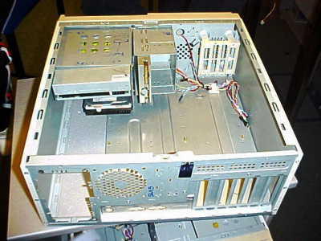

Chassit är mest menat att se snyggt ut, det är som rustning som skyddar komponenterna, hjälper med att sortera sladdar och generellt göra datorn mer bekväm och lättare att använda. Formen av ett chassi kan påverka kylningen, du vill ha ett som leder luft bra.
